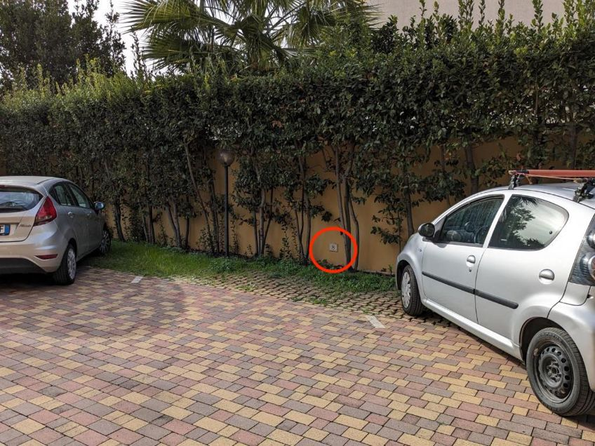
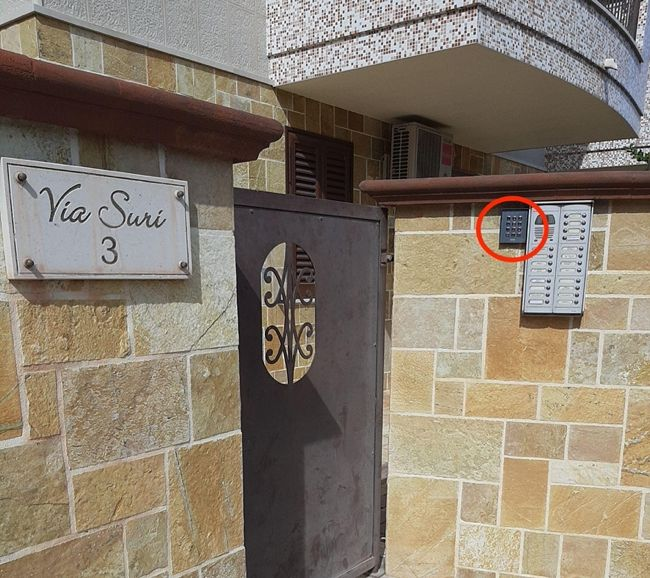

Im Folgenden finden Sie alles, was Sie benötigen, um die Wohnung zu betreten. Sie benötigen zwei Codes, die wir Ihnen nach einer Nachricht mit Passfotos aller Gäste per WhatsApp an +39 347 4300269 oder +39 347 1776671 zusenden werden.
Wir sind unter Via Suri 3, San Vito, Taranto zu finden — in Google Maps öffnen.
Bitte parken Sie bei der Ankunft außerhalb des Haupttors. Wenn Sie lieber innen parken möchten, nutzen Sie das Tor mit der Beschriftung ENTRADA (siehe Foto unten). Die Fernbedienung in der Wohnung öffnet beide Tore: untere linke Taste zum Einfahren, obere linke Taste zum Ausfahren.


Neben der Gegensprechanlage finden Sie ein Tastenfeld. Geben Sie ERSTER CODE + * (Sternchen) ein, um das Fußgängertor zu öffnen.

Geben Sie ERSTER CODE + * (Sternchen) erneut auf dem Tastenfeld an der Eingangstür des Gebäudes ein, um hineinzugehen.

Nehmen Sie den Aufzug (oder die Treppe) in die dritte Etage. Unsere Wohnung befindet sich auf der rechten Seite, wenn Sie den Aufzug verlassen.
Vor der Wohnungstür finden Sie einen kleinen Schlüsselsafe. Ziehen Sie seine schwarze Abdeckung nach unten und geben Sie dann ZWEITER CODE + # (Hash/Raute) ein, um ihn zu öffnen und Ihre Schlüssel zu nehmen.

Benötigen Sie Hilfe?
Wir sind immer erreichbar. Zögern Sie nicht, uns per WhatsApp unter +39 347 4300269 oder +39 347 1776671 zu kontaktieren.
Wir wünschen Ihnen einen wunderschönen Aufenthalt. Danke, dass Sie sich für uns entschieden haben!